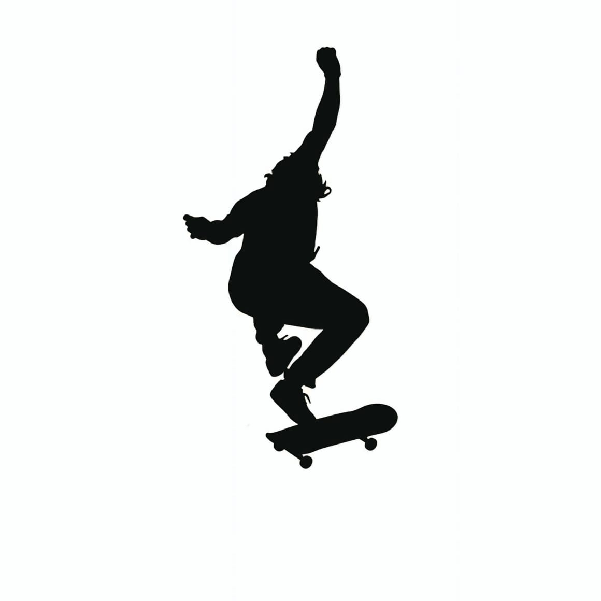

KING OF
SCRAWL
THE OFFICIAL BRAND BY KIM KS


KS
Mais que uma marca: Um legado de estilo e manobras.
A King Of Scrawl emerge no cenário nacional como a assinatura definitiva da cultura underground. Idealizada pelo skatista profissional Kim KS, a marca é a síntese de décadas de vivência nas ruas...
Focada em entregar um lifestyle autêntico, a King Of Scrawl redefine o conceito de streetwear premium...
O enfâse da King Of Scrawl está na originalidade...
KING OF SCRAWL
PROSKATER INFLUENCE | ART & LIFESTYLE | ESTABLISHED 2025